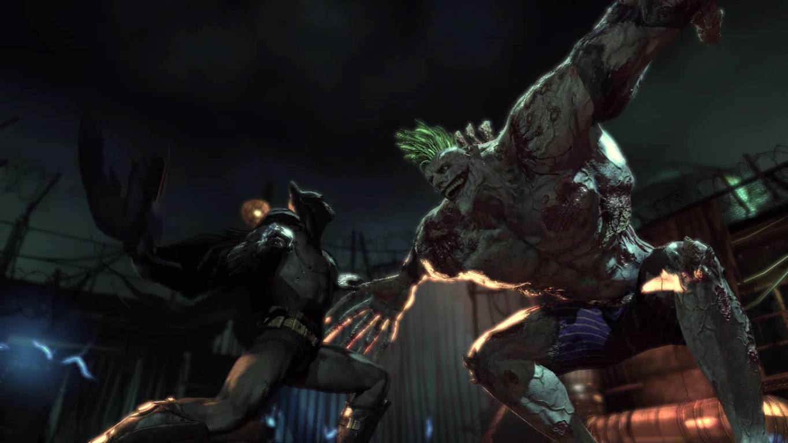

God of War
por
Santa Monica Studio

El regreso de una de las grandes sagas de la historia de los videojuegos, empezó con el sorpresivo anuncio en el E3 de 2016, apareciendo Kratos luego de la saga griega, marcó el reinicio de la saga, lanzando el juego en 2018 ya con un Kratos más maduro y con la sorpresa de su hijo Atreus, ahora en tierras nórdicas empieza una nueva aventura del Dios de la Guerra.

Empezamos la aventura luego de la muerte de la esposa de Kratos, ahora con la responsabilidad sola de cuidar a Atreus, el juego cambia respecto a las entregas anteriores, siento un combate más táctico y de saber manejar el escudo, donde dejamos atrás las espadas del caos, por el hacha de leviatan. Nos adentramos en tierras nórdicas para esparcir las cenizas de Faye en la montaña más alta del reino. Nos encontraremos con peligros que vienen de todos los frentes y poco a poco Atreus irá descubriendo su verdadera naturaleza. Durante la aventura los enemigos irán subiendo de nivel según avancemos para lo cual necesitaremos mejorar nuestra armadura y buscar a nuestras viejas amigas.

Tendremos un crecimiento de ambos personajes durante todo el viaje, pasando muchas horas juntos, así como victorias y derrotas, un viaje al pasado y tal vez una mirada hacia un futuro incierto, pero God of War de 2018, es una aventura de las que Santa Monica Studio nunca nos decepciona. Además de la aventura principal tendremos misiones secundarias de diferentes niveles, pero nada comparado con las valkirias, y sobre todo su reina Sigrun, mucha suerte en ese reto, al final quedamos 1-24.
Star Wars Jedi: Fallen Order
por
Respawn Entertaiment

Luego de la caída de la orden Jedi, luego de 5 años el padawan Cal Kestis, sigue escondiéndose del Imperio, tratando de evitar a los Inquisidores de Vader, intentado al mismo tiempo tener paz por su pasado e intentar reconstruir la orden Jedi. El juego es una aventura en tercera persona, enfocándose en el uso del sable de luz, donde necesitaremos aprender a atacar y saber cuando defenderse, luego combinar eso con el uso de la Fuerza, la cual iremos desbloqueando poco a poco.

Durante la aventura iremos con nuestro confiable droide BD-1, y también conoceremos a una maestra Jedi Cerebrito Junda y al piloto Greez Dritus, los 3 en la nave Mantis intentarán buscar información para reconstruir la orden Jedi. Visitaremos algunos planetas con diferentes enemigos, acompañados de algunos inquisidores que deberemos derrotar, es un juego que todo fan de Star Wars debería jugar, para sentirse como un Jedi. Los planetas cuentan con diferentes cosas que investigar, desde ropa para nuestro protagonista hasta vida extra que viene bien durante el combate.

Es una aventura de crecimiento y redescubrimiento del pasado, para entender que paso con Cal en los años
posteriores a la purga Jedi. Muy entretenida y cuenta con la opción de nuevo juego plus, para jugar la
aventura con la mayoría de poderes desde el inicio y por cierto mucha con
la aparición de Darth Vader al final del juego, donde nos da una paliza y nos deja claro que no somos
rivales para él.spoilers
Batman Arkham Asylum
por
Rocksteady Studios
Batman Arkham Asylum lanzado en 2008 por Rocksteady marca el inicio de una saga mítica, donde podemos tomar el papel del caballero oscuro con la voz de Kevin Conroy, con un combate innovador para el tiempo de su salida. Como usualmente sucede el Joker con la voz de Mark Hamill, desata el caos en Gotham y es llevado al siquiátrico de Arkham, donde empieza el juego luego de todo es parte del plan del Joker. El juego cubre con algunos de los villanos de la galería del caped crusader como Joker siendo el principal antagonista, Harley Quinn, Killer Croc, Bane, Scarecrow, Riddler y Posion Ivy.
Podemos explorar la mayoria de la isla de Arkham donde tendremos varias misiones secundarias, e iremos obteniendo nuevos artefactos para usar con Batman, según avancemos durante el juego, los detalles que se notan con el traje y con Batman mismo durante la noche son bastante buenos, sumergiendo más en la historia del juego. Podremos usar el modo detective para ir resolviendo puzzles a través del juego, así como para ver nuestro entorno en los encuentros modo predador, donde realmente podremos sentir lo que se siente ser Batman al observar como los enemigos van aumentando su velocidad cardiaca debido al miedo de ver a sus compañeros siendo derribados.
El juego es la base de lo serían unas entregas más refinas en Arkham City y Arkham Knight. Por fin se tuvo un juego que le hizo justicia a ser Batman, un gran inicio de una gran saga.